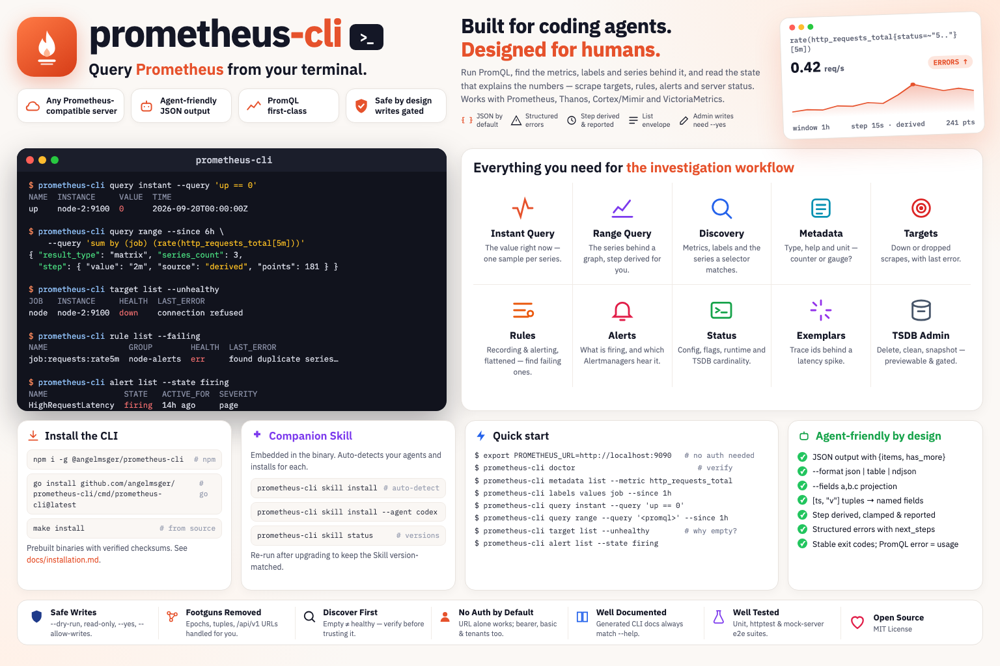

Query Prometheus from your terminal — built for coding agents, designed for humans.

Run PromQL, find out what is actually being recorded, and read the operational state behind the numbers.
query instant for the value now, query range for the series behind a graph — plus exemplars, format and parse.
metadata list gives a metric's type and help text, labels values its label values, and series list exactly what a selector matches.
Omit --step and the CLI derives a round resolution for the window — and clamps one that would blow past Prometheus' 11,000-point ceiling. The result says which.
Prometheus' [timestamp, "value"] pairs come back as named fields with an RFC3339 instant beside the raw epoch — and NaN and +Inf survive intact.
target list --unhealthy for a failing scrape, --state dropped for one relabelling removed, and rule list --failing for a silently broken recording rule.
Rules are lifted out of their groups into one filterable row each, carrying group, file and their active alerts.
JSON by default, with structured errors — categories, exit codes and recovery next_steps a coding agent can branch on.
A plain Prometheus needs no credential at all. Behind a gateway, a bearer token or basic auth lives in the OS keychain — plus --tenant for Cortex, Mimir and Thanos.
kubectl-style named contexts in one config file. Switch the current server, or override per command with --use-context.
Install with npm, then finish setup in two steps — deploy the Skill, then turn on shell completion.
# recommended — fetches the prebuilt binary for your platform
npm install -g @angelmsger/prometheus-cli
Other methods — go install, a source build, or a prebuilt binary from the
Releases page — are in the
README.
Then finish setup:
A prometheus Skill is embedded in the binary. It detects your coding agent — Claude Code, Codex — and installs for each:
$ prometheus-cli skill install # Re-run after CLI upgrades, then reload the agent context.
Completes subcommands and flag values. Load it once:
$ source <(prometheus-cli completion bash)A plain Prometheus needs only a URL. Find the metric, then ask the question.
# setup (or just: export PROMETHEUS_URL=http://localhost:9090) $ prometheus-cli config init --pretty $ prometheus-cli doctor # what is down right now $ prometheus-cli query instant --query 'up == 0' # find the metric before querying it — the type decides the query $ prometheus-cli metadata list --metric http_requests_total $ prometheus-cli labels values job --match 'http_requests_total' --since 1h # error rate over the last hour; the step is derived and reported $ prometheus-cli query range --since 1h \ --query 'sum by (job) (rate(http_requests_total{status=~"5.."}[5m]))' # an empty result? look at the scrape, not the query $ prometheus-cli target list --unhealthy $ prometheus-cli rule list --failing # what is firing, and is anyone being told $ prometheus-cli alert list --state firing $ prometheus-cli alert managers
Organised <noun> <verb>, aligned with Prometheus' own API. Every flag and example lives in the README and the companion Skill.
instant, range, exemplars, format, parse — the PromQL surface.
What a selector actually matches, before you aggregate over it.
labelsLabel names and their values — __name__ is the metric list.
A metric's type, help text and unit, aggregated or per scrape target.
targetScrape targets, active and dropped, with health and last error.
ruleRecording and alerting rules, flattened — including the failing ones.
alertActive alerts and the Alertmanager endpoints they go to.
statusConfig, flags, runtime info, build info and TSDB cardinality.
adminTSDB writes — delete series, clean tombstones, snapshot — gated and previewable.
configSetup wizard, plus multi-server context management.
doctorDiagnose configuration, credentials and connectivity.
skillDeploy the embedded companion Skill to your agents.
Longer-form documentation, rendered on GitHub.
Every install method, shell completion, deploying the Skill, and configuration.
Architecture, the API client and error model, config resolution and rendering.
The write-safety posture around the TSDB admin endpoints.
How releases are cut and published to GitHub and npm.
The prometheus Skill that teaches a coding agent the CLI.
Preset service settings with prometheus-cli config set-context; reuse a matching stored login with auth reuse, or use auth guide and auth login for personal credentials when a gateway requires them. Team distribution guide